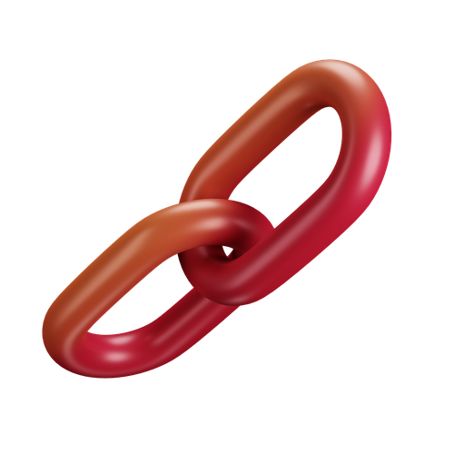
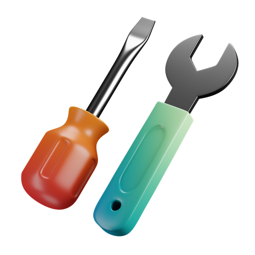
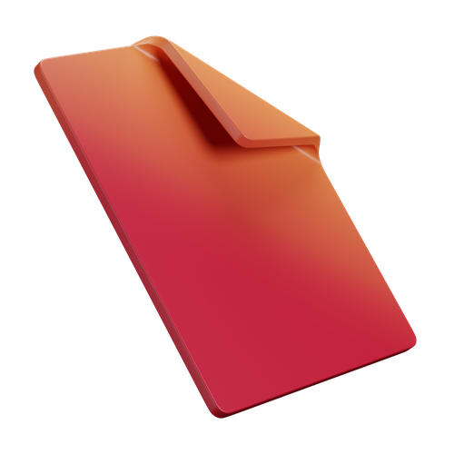

open source
Ralph Loop
Give Claude Code a task list. Walk away. Come back to commits, progress logs, and finished work.
1
The Inner Loop (one iteration)

Read PRD
Find next incomplete story

Branch
Create feature branch

Work
Write code, make changes
Check
Typecheck, lint, tests
Review
Self-review the diff

Merge
Merge back, mark done
Log
Write to progress.txt
fresh instance picks up next story
2
Phase Gates (you stay in control)
Phase 0: Research
no gate (flows through)
- ✓ RECON-001: Audit current state
- ✓ RECON-002: Research options
Phase 1: Build
phase gate
- ✓ IMPL-001: Add rate limiting
- ✓ IMPL-002: Token expiry
- ✓ IMPL-003: Refresh rotation
You review
Phase 2: Polish
phase gate
- CLEAN-001: Audit logging
- CLEAN-002: Error messages
3
Five files. That's the whole thing.

CLAUDE.md
Agent instructions, safety rails, build gates
prd.json
Stories with acceptance criteria, grouped into phases
progress.txt
Append-only log (memory between iterations)

ralph.sh
The runner. Same file across all loops

monitor.sh
Voice alerts via macOS say (optional)